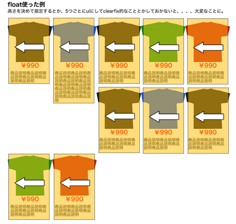
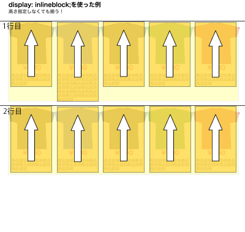

CSS初級講座的なもの
2015/05/29
REO MATAYOSHI

自己紹介（必要だろうか...）
2012/2〜2014/12 WEB・EC完全未経験でECP在籍
-
防災商社
WEB制作全般・解析/マーケ全般、社内IT関連全部がむしゃらに。
PHP書いたり、EC-CUBEの開発もなんかやったりも。
主にBtoB向けサイト。IE6, 7対応も苦労（CSSハック）してやったり。
-
DeNA
SEIYUドットコムのフロントエンドエンジニア
最初はJSを0から作れない、動的HTMLファイル編集に慣れていないので、特集系のLPからスタート。
こんな俺でもお勉強したので、その後機能追加、UI改修、GA周りの実装など色々やらせてもらうようになったとさ。
自己紹介（ECP卒業後）
-
一応W3C認定メンバーであるWEB制作会社
フロントエンドエンジニア
コーポレートサイトやキャンペーンサイトやガリガリコーディング。
ディレクターいないに等しいので社内フロントエンドメンバーのディレクションも。
色々とありまして...そして縁ありまして。。。
-
DeNA
SEIYUドットコムのフロントエンドエンジニア
要件定義、機能追加・開発、UI改修、CVR改善施策、GA・サイカタの実装、運用ツール作成、一部ディレクターの業務サポート。etc...
SEIYUドットコムのネットスーパ使ってみてね！
 盛勇（SEIYU）です！
盛勇（SEIYU）です！
帰社日や外部の勉強会について
- 積極的に行きましょう！勉強、外から、他人からのINPUT必要。どんな仕事してても。
- 勉強会で全て理解しようとしないこと。無理っしょ！
- 勉強会への参加は自身は下記のように捉えている。
- 自身の勉強すべきことを確認。→自分の未熟さを再確認する。。。
- 業界で誰がどういうことを知っているのか、どんな本を書いているのかわかる。
- 懇親会で有識者や同士などの仲間を作る。いわゆる横の繋がり。本当助かる。
勉強会の参考例
どうやって見つけるの？
インテリジェンスさんがやってますやん！
dots.（ドッツ）：http://eventdots.jp/
→興味のあるのだけ登録して、メールが来る仕組み！
エンジニア向けが多いが、UI/UXやマーケティングなんかもありますよ。
オンライン学習サイト
オンライン学習サイトも活用しよう！
などなど。便利な世の中になったもんだ。
メルマガも活用
メルマガとかも一応登録しておこう！
などなど。暇な時に読んでみる。
CSSって何？
- CSS（Cascading Style Sheets、カスケーディング・スタイル・シート）とは、ウェブページのスタイルを指定するための言語。
- CSSは、HTMLと組み合わせて使用する言語。CSSだけでは何も表示できない。
- HTMLを装飾（デザイン）できるルール。
- プログラム言語ではない。（sassって奴がいるけど最初は気にせずに）。怖くない。
画像なしで装飾（デザイン）できる良い奴！
あとは専門のページをご覧あれ。http://www.htmq.com/csskihon/
CSSを習得するには？
- 基本のHTMLを書けるようになろう！HTMLとCSSはセット！
- HTMLもプログラミング言語ではない。基本は文書、マークアップ言語。
（大きいサイトなどでは確かにプログラミング知識は必要になってくるが。。）
- 需要高いのはスマホサイトやレスポンシブ。でも基本はPCサイト作れてから！
- 正解は一つじゃない。色々な方法、組み合わせで実現できる！
- とりあえず作ろう！ツール？DW？ なくても作れるやん！PCがあれば。
お財布に優しい奴！
- バナーの練習のように、真似をするのも良いね。
- あとは下記を繰り返すのみ！
- 作る、試す
- 調べる、ググる！
- 本などで勉強する！
- （人に聞く）
以上！！！
marginとpaddingの使い分け
分かったつもりて実は分かっていないことは、良くある。
正直よくわかっていなくてもなんとかコーディングてきてしまう。
でもそれぞれ意味があるから用意されている。
marginとpaddingも意味があるから。
marginとpaddingは、両方同じように余白をとるもの。
余白という意味では同じなので間違った余白の指定も出来る。
でも、使い分け方はとても簡単！
- marginは要素の外側、「要素間」の余白をとる。
- padding は要素の内側、「要素内」の余白をとる。
marginの特性
marginは要素の外に対する余白。
例えばdiv要素に背景色を付けてもその余白に背景色は付かない。
やってみよう。（以後すべてサンプルはHTML5で書いてるよー）
marginの相殺
marginは縦方向（垂直方向）に限り、重なるmarginを相殺する性質があるでー。
box2の下に20px、box3の上に20pxだから、box2とbox3の余白は40pxになるはず。
あれ？！ならない！
上下に隣接する要素のmarginが同じ場合、相殺されてしまう。20pxとなる。
どちらかが少ない、または多い場合はどうなのか？
その場合、値が大きいほうが勝つ。
box2の下に20px、box3の上に40pxだと、40pxになる！
サンプルコード触って試してみてや！
paddingの特性
paddingは要素の内側の余白。
内側が太ることで、要素自体も太る。要素の大きさが変わる。
内側だから背景色も付くよ！
試したほうが早い！
marginとpaddingを一緒に使うと...
一つの要素（divなど）にmarginとpaddingを一緒に使うと図のようになる。
border使うとわかりやすい。
ピンクがpaddingnの余白。白がmarginの余白。黄色がテキストエリア。
色々いじって試してみて！
marginとpaddingの正しい使い方
図のように作るのが良い例。

まずこれが良い例だと覚えて！
図のように作るのが悪い例。

なんかこれでも行けそうな気がしないか。
余白の取り方をmarginとpaddingを入れ替えただけ。余白を取るのは変わらない。
やってみよう！
悪い例の結果
要素間の余白に padding をとろうとしていて、要素内の余白に margin を指定してしまっている。
これでは要素 B と要素 C との距離が空いていることにならない。
背景色やボーダーなどが無ければ、普通に距離が空いているように見えるだろうが、背景色があるので、padding の領域も背景色が広がるので要素 B と要素 C はくっついた様に見えてしまう。
また上下の余白は margin で取ってしまっているので、背景色がつかない。

marginとpaddingのまとめ
- marginとpaddingの意味、特性を把握していないと同じ余白を取ることをしていても、意図した表示にならない。
- たまに背景色やボーダーがない場合、なんかうまく見た目はできちゃうこともあるが。。。思わぬ時にハッとする。。急に背景色入れることになったとか。
- コードも解釈が難しい汚いコードになり、メンテナンス性も悪くなるので、正しく使いわけよう！
CSSのデバッグ（確認）方法
- 各ブラウザのデベロッパーツール的なのを使おう。
ブラウザ上でCSSを書き換えたりしてその場で確認できる。
- chromeだと右クリックで「要素を見る」。
- Firefoxだと右クリックで「要素を調査」。FireBugというのもあるがなくても良い。
- IEもF12で「開発者ツール」。
こんな感じ
CSSのデバッグ スマホサイト
ブラウザはスマホサイトのエミュレータにもなる。もちろんPCサイト同様、HTML・CSSの内容見れて、書き換えたり出来る。
スマホサイトは最後は必ず実機で
スマホサイトをPCのブラウザで確認するのは、UA偽装をしている。
100%実機と同じとは限らない。
レスポンシブデザインはまた別。UA偽装とは別で、ブラウザの表示領域を変更すれば表示が切り替わる。
でも最後は必ず実機で！！
Debugまとめ
- ブラウザの機能をつかってHTML、CSSの確認できるよー！
- DWのプレビューとかあてにしないでー！
- ブラウザの機能を使って、真似してみたいサイトのHTML、CSSはある程度コピーしたりして、真似て作れるので、是非試してみて！
横並びのリストを作る
よくよくあるリストを横並びにする方法は色々ある。
例えば
- floatを使う（float: left;とかとか）
- display: inline-blockを使う
- display: table-cellを使う
- display: boxを使う
- display: flexを使う
たくさんある。。。
今日は基本的な 1 と 2 を紹介。特に2を。
残念ながら、下記のようになる。

細かい話は省くが、このように「float:left」された要素が連続すると、左上から詰めて配置されるようなレイアウトが行われるので、左のような描画結果になってしまう。
描画イメージはこんな感じ。

実現したい結果とは異なってくる。
これを解決するには、例えば高さをMAX値に固定で指定したり、5つごとにclear:leftを指定したり、5つごとを別のul要素で囲み、clearfix的な指定を行うなどという方法が必要となってくる。
まあそういった解決方法も全然ありだが、別の解決方法も探ってみよう。
描画イメージはこんな感じ。

上で揃えるために、vertical-align:top;にしておく必要がある。
このinline-blockの手法だと「行」のブロックでレイアウトしていることになる。2つの行ブロック
6つ目からは右に行けないから改行して、2行目から描画するイメージ。
inline-block使うときの注意点
さてさて、下記のようにコードにあった変なコメントは、改行やタブを殺すためのテクニック。改行やタブが存在しているとホワイトスペースがそこにあることになり、そのぶん、領域が確保されてしまう。インデントなしにしても良いが、コードが読みにくくなるのでこのトリッキーな書き方をする。
<ul class="list"><!--
--><li class="item">・・・</li><!--
--><li class="item">・・・</li><!--
--></ul>
横並びのまとめ
- floatも全然良いが、少しHTMLのコードが複雑になる、もしくは柔軟性に欠ける。floatのクリア漏れに注意。
- 少々トリッキーなHTMLの書き方になるが、inline-blockを使うとシンプルなブロック構成で柔軟な対応が可能になる。
さくっとアニメーション
CSSでアニメーションして動きを表現したい。
だがなかなか初心者にはハードルが高く感じる...
しかしさくっと3分クッキングのように使える方法があります！！
こちら、Animate CSSで簡単に料理してみましょう。
アニメーションまとめ
超簡単ですね！！！動くと楽しい！！Javasctiptなしで動くなんて。
ただし下記は頭に入れておこう！
- animation.cssライブラリは、サイトでは使わない不要なアニメーション用のCSSも含んでいるので、サイト全体で読み込むのはパフォーマンスに影響するので慎重に。
- サポートしていないブラウザ環境などあるので、必ず検証対象のブラウザ、端末で確認を！！
- いつか自分で作れるものは、ライブラリなしで自分で作ろう。その方がパフォーマンスが良くなるよ！！
- CSSアニメーションで動かない場合は、がんばってJavascript（jQuery）で作ろう！！！次のステップですな。